Engineering and manufacturing report
This report gives the data that a manufacturer needs to print, finish, and assemble the Bluespeaker Mini. It contains the parts, the print settings, the joint sections, the fastener schedule, the fits, and the inspection steps.
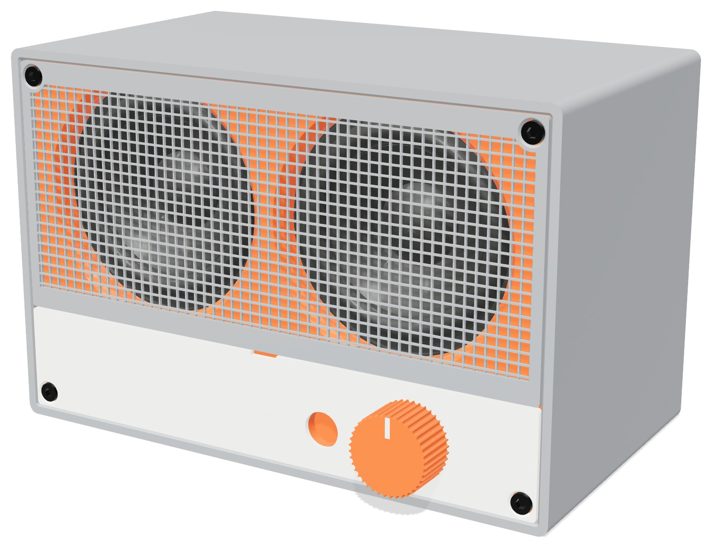
| Item | Value |
|---|---|
| Revision | 0.3 |
| Date | 11 October 2026 |
| Source model | cad/bluespeaker_mini.py (build123d) |
| Print files | cad/stl-mini/: STL in print orientation, 3MF for Cura |
| Process | FDM, PLA 2.85 mm, 0.5 mm nozzle (LulzBot TAZ Workhorse SE, Klipper) |
| Units | Millimetres. Angles in degrees. Ø is a diameter. |
| General tolerance | ±0.2 mm on printed parts unless a fit is given in section 8 |
Contents
1 · Product overview
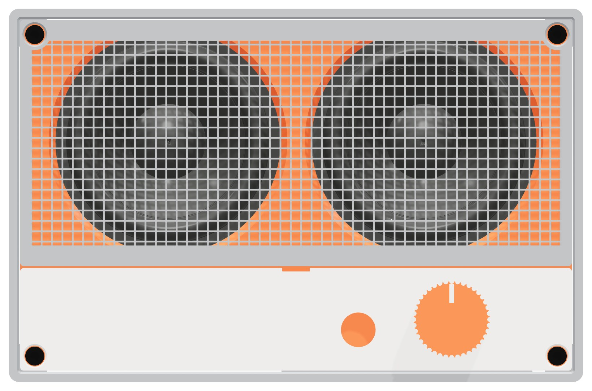
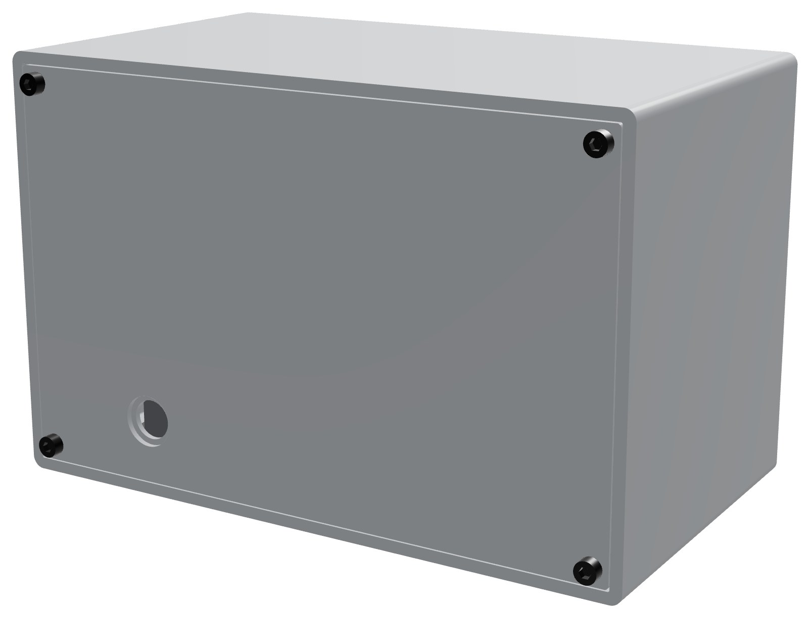
| Item | Value |
|---|---|
| Outside size | 166 W × 108 H × 94 D, corner radius 3, wall 3 |
| Drivers | 2 × Dayton Audio PC68-4 (2.5 in, 4 Ω), rear-mounted on 3 mm spacer frames, 74 mm apart |
| Amplifier | ZK-502C Bluetooth board on a printed tray, 12–24 V DC |
| Enclosure | Sealed, about 1.1 L |
| Front | Grille (grey) and control strip (white), both snap onto the orange baffle. Four cap heads show in the corners. |
| Printed mass | About 354 g if solid. The real mass is lower: the panels have 40 % infill. |
1 · Product overview
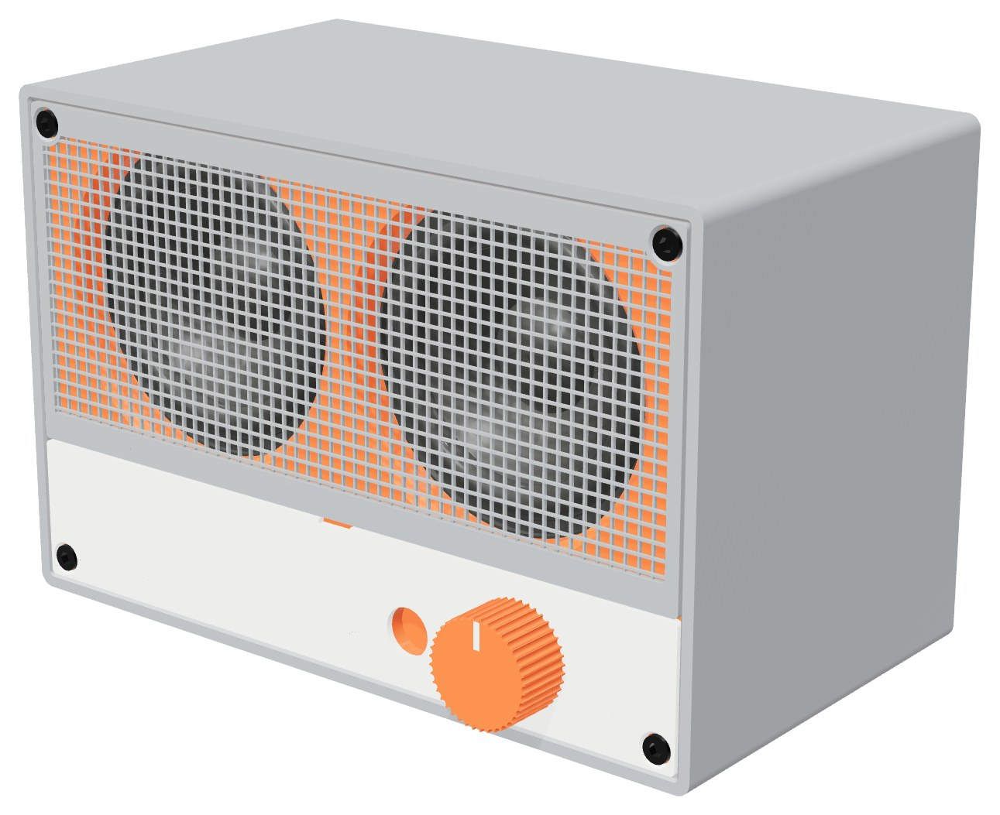
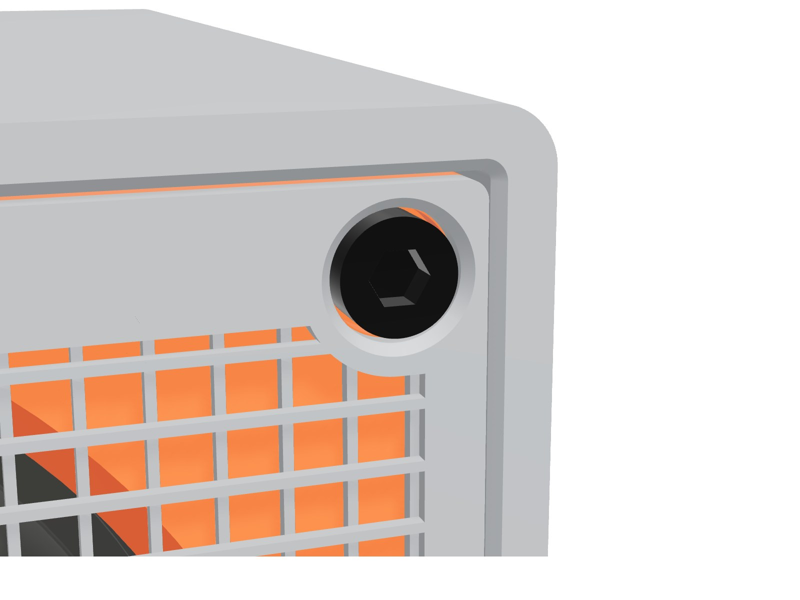
2 · Bill of materials
| ID | Part | Colour | Qty | Print size X × Y × Z | Volume cm³ | Mass solid g | Profile |
|---|---|---|---|---|---|---|---|
| P01 | Sleeve | grey | 1 | 166 × 108 × 94 | 156.1 | 193.5 | Shell |
| P02 | Feet | grey (or stick-on rubber feet) | 4 | 142 × 76 × 3.9 | 1.2 | 1.5 | Parts |
| P03 | Front baffle | orange (shows through the grille) | 1 | 159.4 × 101.4 × 7 | 42.8 | 53.1 | Parts |
| P04 | Amplifier tray | grey | 1 | 72.5 × 81 × 15.5 | 16.7 | 20.8 | Parts |
| P05 | Rear panel | grey | 1 | 159.4 × 101.4 × 3 | 48.1 | 59.6 | Parts |
| P06 | Control strip | white | 1 | 159.4 × 29.7 × 4 | 6.8 | 8.5 | Parts |
| P07 | Front grille (lattice) | grey | 1 | 159.4 × 71.2 × 4 | 5.8 | 7.2 | Grille (or Grille Infill for the 3MF) |
| P08 | Knob | orange | 1 | 22 × 22 × 12 | 3.9 | 4.8 | Parts |
| P09 | Knob mark | white | 1 | 1.4 × 5.5 × 1.2 | 0 | 0 | Parts |
Print size is in the print orientation, on the bed. The mass is for a solid part in PLA (1.24 g/cm³). The real mass depends on the infill.
2 · Bill of materials
| ID | Part | Specification | Qty |
|---|---|---|---|
| B01 | PC68-4 left | Dayton Audio PC68-4 | 1 |
| B02 | PC68-4 right | Dayton Audio PC68-4 | 1 |
| B03 | ZK-502C board | ZK-502C Bluetooth amplifier | 1 |
| B04 | ZK-502C parts | Part of the ZK-502C | 1 |
| B05 | Volume control nut | Supplied with the ZK-502C | 1 |
| B06 | Screws: baffle to sleeve | M3 x 8 socket head cap screw | 4 |
| B07 | Inserts: baffle to sleeve | M3 heat-set insert, short (3 mm) | 4 |
| B08 | Screws: tray to baffle | M3 x 8 socket head cap screw | 2 |
| B09 | Inserts: tray to baffle | M3 heat-set insert, short (3 mm) | 2 |
| B10 | Screws: rear panel to sleeve | M3 x 6 socket head cap screw | 4 |
| B11 | Inserts: rear panel to sleeve | M3 heat-set insert, short (3 mm) | 4 |
| B12 | Screws: speakers | M3 x 5 pan head | 8 |
| B13 | Inserts: speakers | M3 heat-set insert, short (3 mm) | 8 |
| B14 | Screws: board to tray | Self-tapping screw, 1.9 x 7, pan head 3.28 (your board screws) | 2 |
| B15 | DC adapter | 12–24 V, 2 A or more. Check the plug size of the ZK-502C socket. | 1 |
| B16 | Speaker wire | 2 × 0.5 mm², 150 mm | 2 |
| B17 | Closed-cell foam tape | 3 × 6 mm, for the driver flanges and the panel seams | 0.6 m |
3 · Print instructions
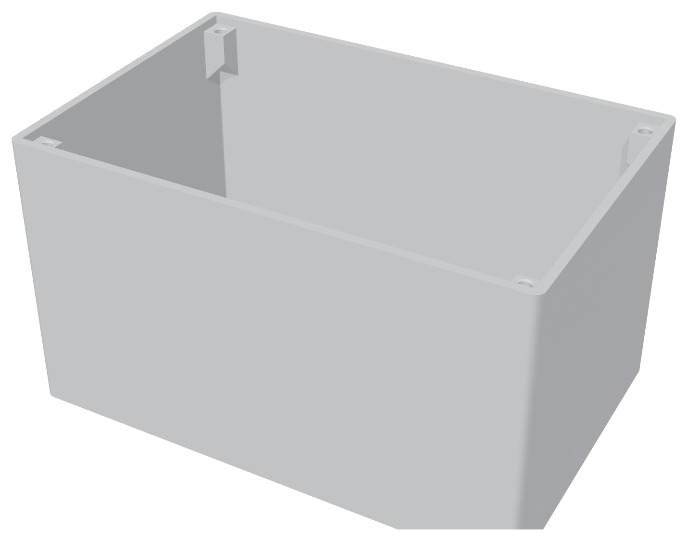
| Orientation | Front opening down |
| Cura profile | Bluespeaker Mini - PLA Shell 0.25 |
| Supports | From the build plate, below the four front posts only |
| Size on the bed | 166 × 108 × 94 mm |
| Visible faces | Front rim (first layer) is the visible front edge. Outside faces are visible. |
| After the print | Remove the supports below the front posts. Drill the four front pilot holes Ø4.0 × 7. Install 8 inserts. |
| Orientation | Flat |
| Cura profile | Bluespeaker Mini - PLA Parts 0.25 |
| Supports | None |
| Size on the bed | 142 × 76 × 3.9 mm |
| Visible faces | None visible. |
| After the print | Glue into the four recesses. Stick-on rubber feet are an option. |
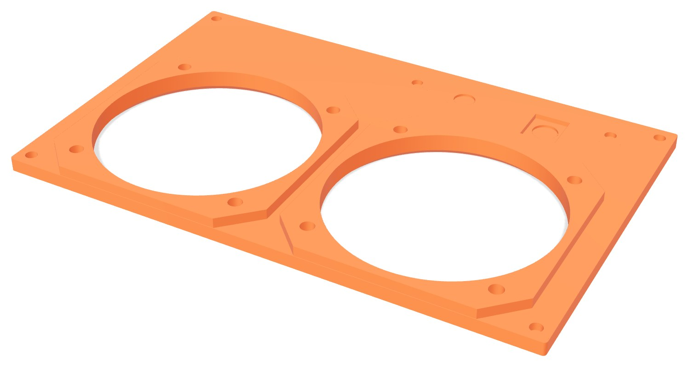
| Orientation | Front face down |
| Cura profile | Bluespeaker Mini - PLA Parts 0.25 |
| Supports | None. All roofs are bridges of 14 mm or less. |
| Size on the bed | 159.4 × 101.4 × 7 mm |
| Visible faces | Front face (first layer) shows through the grille. |
| After the print | Drill the six counterbore membranes Ø3.4 from the back. Cut the pot and AUX membranes. Install 8 inserts in the spacer frames. |
3 · Print instructions
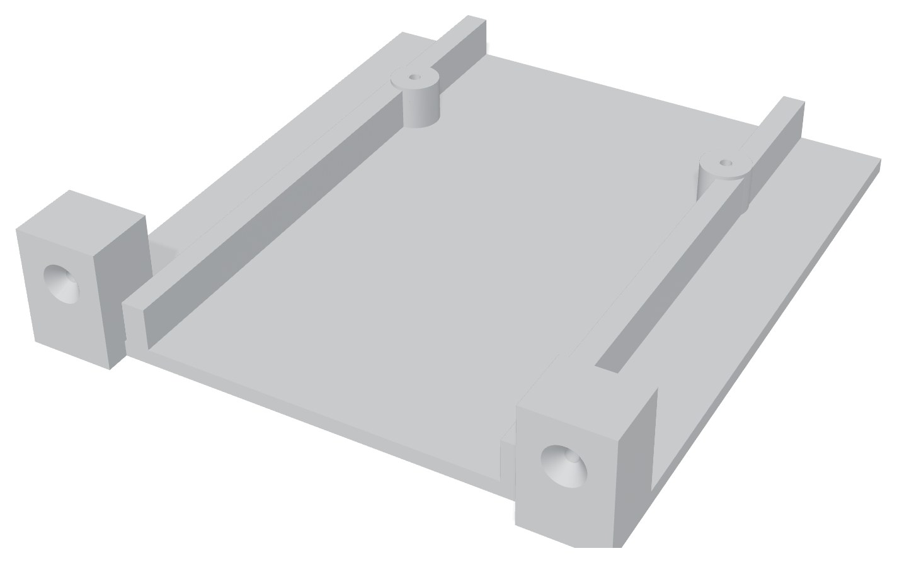
| Orientation | Flat |
| Cura profile | Bluespeaker Mini - PLA Parts 0.25 |
| Supports | None |
| Size on the bed | 72.5 × 81 × 15.5 mm |
| Visible faces | None visible. |
| After the print | Drill the two tab pilot holes Ø4.0 through the tab. Install 2 inserts. Do not drill the two post tap holes. |
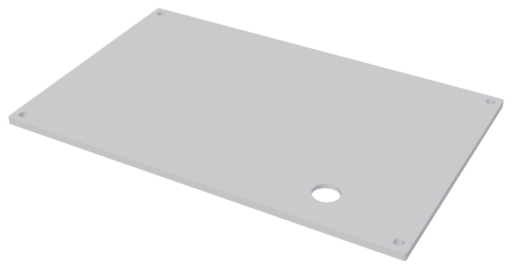
| Orientation | Outer face down |
| Cura profile | Bluespeaker Mini - PLA Parts 0.25 |
| Supports | None |
| Size on the bed | 159.4 × 101.4 × 3 mm |
| Visible faces | Outer face. |
| After the print | None |
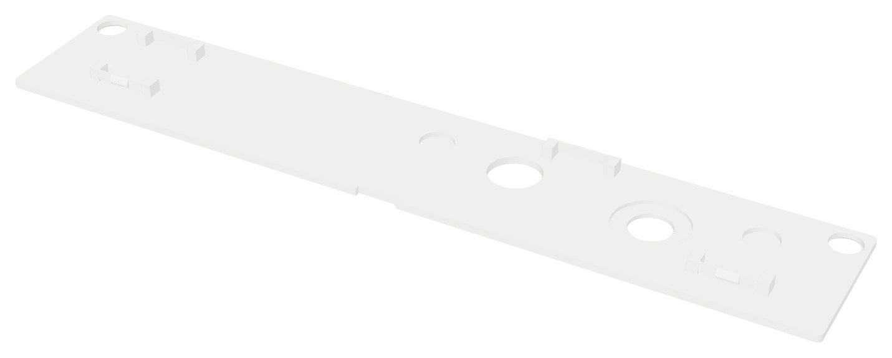
| Orientation | Front face down, snap catches up |
| Cura profile | Bluespeaker Mini - PLA Parts 0.25 |
| Supports | None |
| Size on the bed | 159.4 × 29.7 × 4 mm |
| Visible faces | Front face (first layer) is the visible face. |
| After the print | Check that the four catch beams are free. |
3 · Print instructions
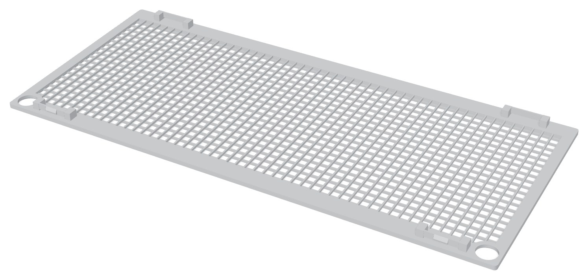
| Orientation | Front face down, snap catches up |
| Cura profile | Bluespeaker Mini - PLA Grille 0.25 |
| Supports | None |
| Size on the bed | 159.4 × 71.2 × 4 mm |
| Visible faces | Front face (first layer) is the visible face. |
| After the print | None. Check that the four catch beams are free of the plate below them. |
| Orientation | Front face up |
| Cura profile | Bluespeaker Mini - PLA Parts 0.25 |
| Supports | None |
| Size on the bed | 22 × 22 × 12 mm |
| Visible faces | Front face and the knurl. |
| After the print | Glue the knob mark into the groove. |
| Orientation | Flat |
| Cura profile | Bluespeaker Mini - PLA Parts 0.25 |
| Supports | None |
| Size on the bed | 1.4 × 5.5 × 1.2 mm |
| Visible faces | Top face. |
| After the print | Glue into the knob groove. |
4 · Process settings
Cura 5.13, printer "LulzBot TAZ Workhorse | SE | 0.5 mm", PLA 2.85 mm, bed 60 °C. The profiles are in cura/. A dash means the printer default.
| Setting | Shell | Parts | Grille | Grille Infill |
|---|---|---|---|---|
| Layer height | 0.25 mm | 0.25 mm | 0.25 mm | 0.25 mm |
| First layer height | 0.425 mm | 0.25 mm | 0.25 mm | 0.25 mm |
| Line width | — | — | 0.5 mm | 0.5 mm |
| Wall thickness | 3.0 mm | 2.0 mm | — | — |
| Wall line count | — | — | 1 | 1 |
| Top/bottom thickness | 1.25 mm | 1.25 mm | 0 mm | 0 mm |
| Infill | 100 % | 40 % | 100 % | 16.67 % |
| Infill pattern | lines | gyroid | lines | lines |
| Printing temperature | 220 °C | 220 °C | 220 °C | 220 °C |
| First layer temperature | 220 °C | 220 °C | 220 °C | 220 °C |
| Print speed | 40 mm/s | 40 mm/s | 30 mm/s | 30 mm/s |
| Outer wall speed | 30 mm/s | 30 mm/s | 30 mm/s | 30 mm/s |
| Infill speed | 50 mm/s | 45 mm/s | 35 mm/s | 35 mm/s |
| First layer speed | 18 mm/s | 18 mm/s | 15 mm/s | 15 mm/s |
| Travel speed | 150 mm/s | 150 mm/s | 250 mm/s | 250 mm/s |
| Retraction | 1.5 mm | 1.5 mm | 2.0 mm | 2.0 mm |
| Retraction speed | 15 mm/s | 15 mm/s | 30 mm/s | 30 mm/s |
| Fan | 40 % | 100 % | 100 % | 100 % |
| Fan full at layer | 5 | 4 | 1 | 1 |
| Bridge fan | 100 % | 100 % | 100 % | 100 % |
| Minimum layer time | 12 s | 12 s | 12 s | 12 s |
| Adhesion | brim | brim | skirt | skirt |
| Brim lines | 12 | 6 | — | — |
| Supports | True | False | False | False |
| Support type | buildplate | — | — | — |
| Horizontal expansion | 0.095 mm | 0.095 mm | — | — |
| Hole horizontal expansion | 0.17 mm | 0.17 mm | — | — |
| Shrinkage XY | 100.21 % | 100.21 % | 100.21 % | 100.21 % |
| Shrinkage Z | 100 % | 100 % | 100 % | 100 % |
| Bridge settings | True | True | True | True |
| Outer wall wipe | 0.4 mm | 0.4 mm | 0 mm | 0 mm |
| Seam | back | back | back | back |
| Extra skin wall count | 0 | 0 | 0 | 0 |
| Skin line directions | [45] | [45] | [45] | [45] |
| Monotonic top/bottom | True | True | True | True |
| Combing | — | — | no_outer_surfaces | no_outer_surfaces |
4 · Process settings
| Setting | Value | Profiles |
|---|---|---|
| Shrinkage compensation XY | 100.21 % | All |
| Shrinkage compensation Z | 100 % | All |
| Printing temperature | 220 °C | All |
| Horizontal expansion | 0.095 mm | Shell, Parts |
| Hole horizontal expansion | 0.17 mm | Shell, Parts |
| Feature | Size | Layers or lines |
|---|---|---|
| Grille and strip | 1.5 mm | 6 layers |
| Baffle | 4.0 mm | 16 layers |
| Front counterbore | 1.5 mm | 6 layers |
| Tray counterbore | 2.25 mm | 9 layers |
| Membrane | 0.25 mm | 1 layer |
| Snap catch height | 2.5 mm | 10 layers |
| Gap below the snap beam | 0.5 mm | 2 layers |
| Snap beam | 0.5 mm | 1 line |
| Ring around a head port | 1.5 mm | 3 lines |
| Head clearance | 0.25 mm | ½ line |
| Grille rib | 0.5 mm | 1 line |
| Grille rib pitch | 3.0 mm | 6 lines |
The grille, strip, and baffle print with a 0.25 mm first layer, so each height is on the layer grid. The sleeve keeps a 0.425 mm first layer for adhesion.
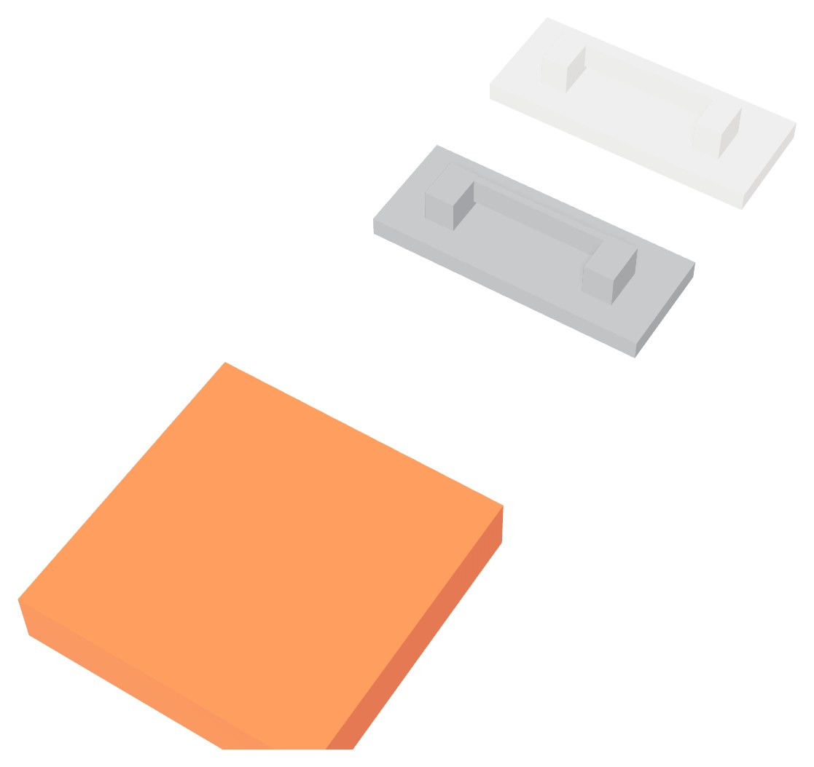
| File | Profile | Test |
|---|---|---|
| fit_test_snap_baffle.stl | Parts | Two pockets |
| fit_test_snap_grille.stl | Grille | Grille catch |
| fit_test_snap_strip.stl | Parts | Strip catch |
| grille_infill_presets.3mf | Grille Infill | Six grille mesh presets |
Press each catch into a pocket until it clicks. Pull it out by hand. Accept: a clear click, the coupon sits flat, it comes out with no crack. Too tight: set snap_bump to 0.3. Too loose: set it to 0.5.
5 · Engineering drawings
The A3 drawing sheets follow at the end of this report. They give the dimensions, the sections through each joint, and the notes for each part. Third-angle projection, millimetres, ±0.2 unless shown.
| Sheet | Subject | Scale |
|---|---|---|
| BSM-00 | General arrangement | 1:1 |
| BSM-01 | Sleeve | 1:1 |
| BSM-02 | Front baffle | 1:1 |
| BSM-03 | Front grille (lattice) | 1:1 |
| BSM-04 | Control strip | 1:1 |
| BSM-05 | Rear panel | 1:1 |
| BSM-06 | Amplifier tray | 1:1 |
| BSM-07 | Knob | 1:1 |
| BSM-08 | Joint details: front corner and tray screws | 6:1, 5:1 |
| BSM-09 | Joint details: snap catches | 9:1 |
| BSM-10 | Joint details: rear post and driver mount | 4.5:1 |
| BSM-11 | Joint details: volume control and AUX socket | 4:1, 5:1 |
5 · Engineering drawings
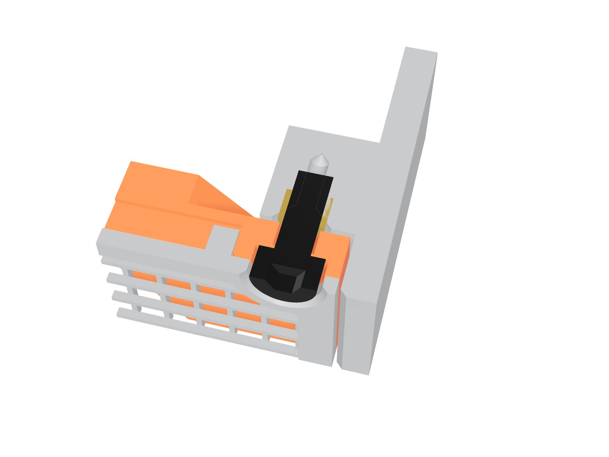
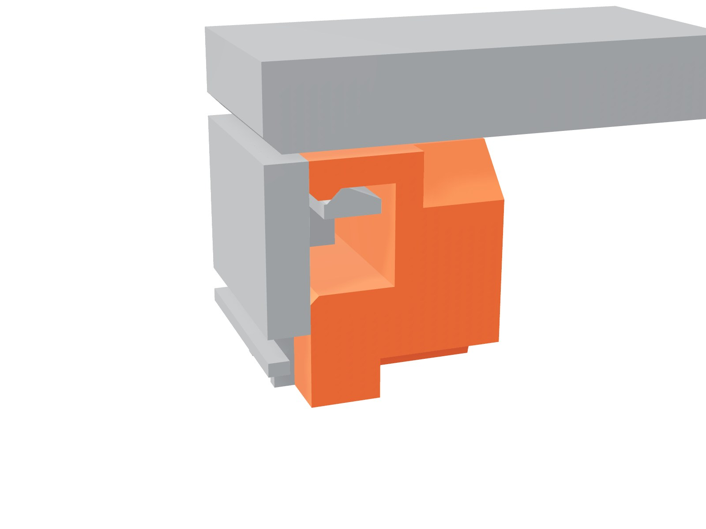
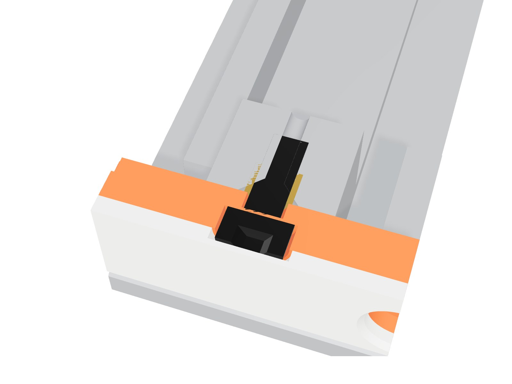
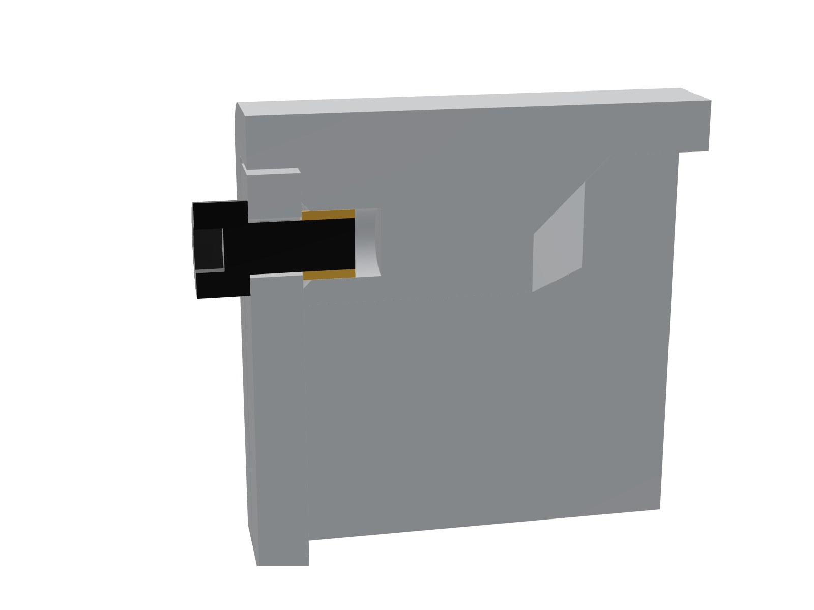
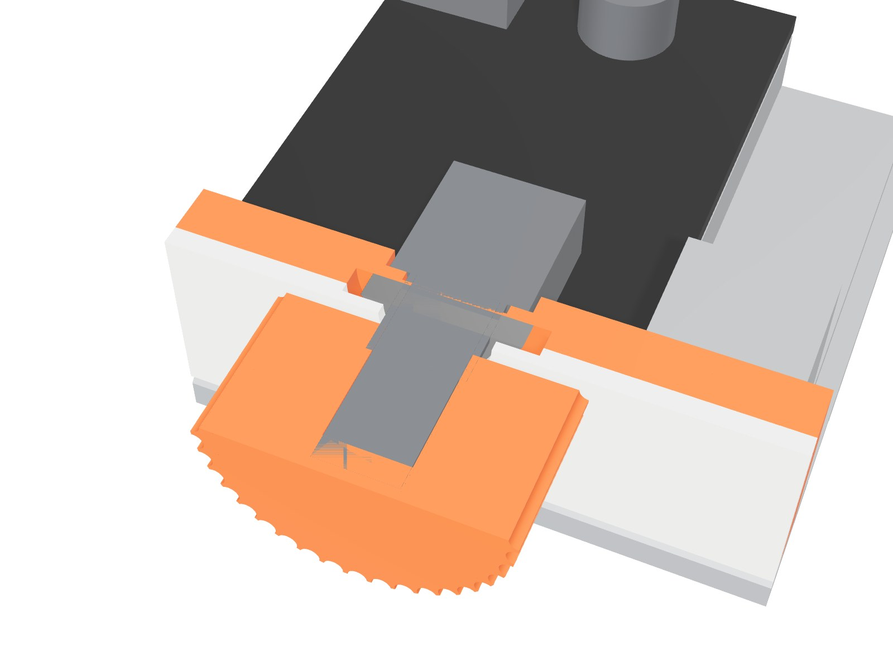
6 · Fastener and insert schedule
| Joint | Qty | Screw | Insert | Hole in the first part | Insert hole |
|---|---|---|---|---|---|
| Baffle to sleeve (front corners) | 4 | M3 × 8 socket head cap, ISO 4762 | Short M3 insert in the sleeve front post | Counterbore Ø6.0 × 1.5, membrane 0.25, clearance Ø3.4 | Pilot Ø1.6 → drill Ø4.0 × 7 |
| Rear panel to sleeve | 4 | M3 × 6 socket head cap, ISO 4762 | Short M3 insert in the sleeve rear post | Clearance Ø3.4, no counterbore | Printed Ø4.0, 0.5 relief chamfer |
| Tray to baffle | 2 | M3 × 8 socket head cap, ISO 4762 | Short M3 insert in the tray tab | Counterbore Ø6.0 × 2.25, membrane 0.25, clearance Ø3.4 | Pilot Ø1.6 → drill Ø4.0 through |
| Drivers to the spacer frames | 8 | M3 × 5 pan head | Short M3 insert in the spacer frame | Driver flange hole | Printed Ø4.0 |
| ZK-502C rear edge to the tray posts | 2 | Self-tapping, Ø1.9 × 7, pan head Ø3.28 | None: the screw cuts its thread | Board mounting hole | Printed tap hole Ø1.5 × 6.5 |
Inserts: M3 heat-set, short (3 mm long, 4.0 mm hole), for example CNC Kitchen M3 Short. 18 in total. Install them with a soldering iron and an insert tip at the temperature that the insert supplier gives for PLA. Push the insert flush with the face. Do not push it below the face.
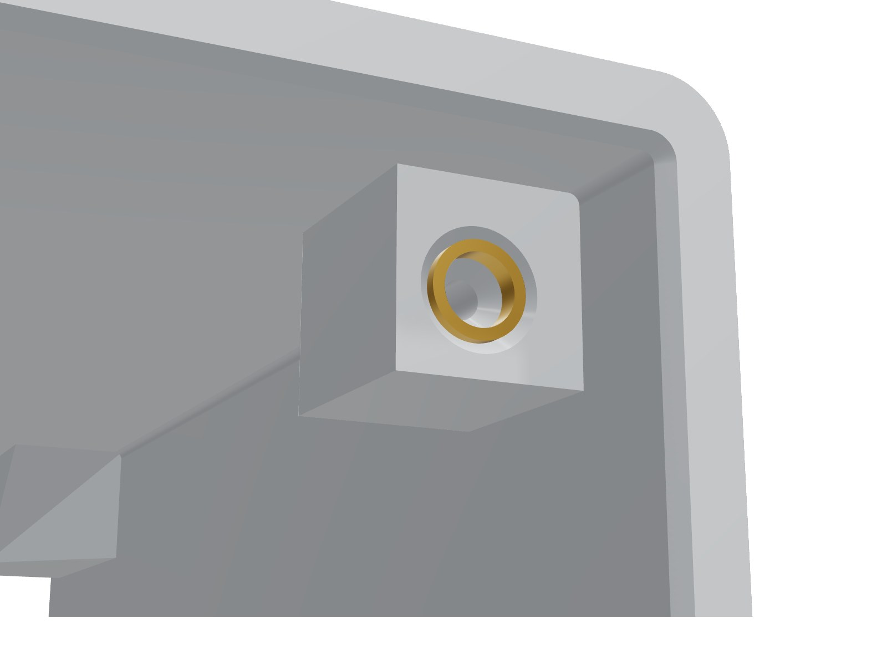
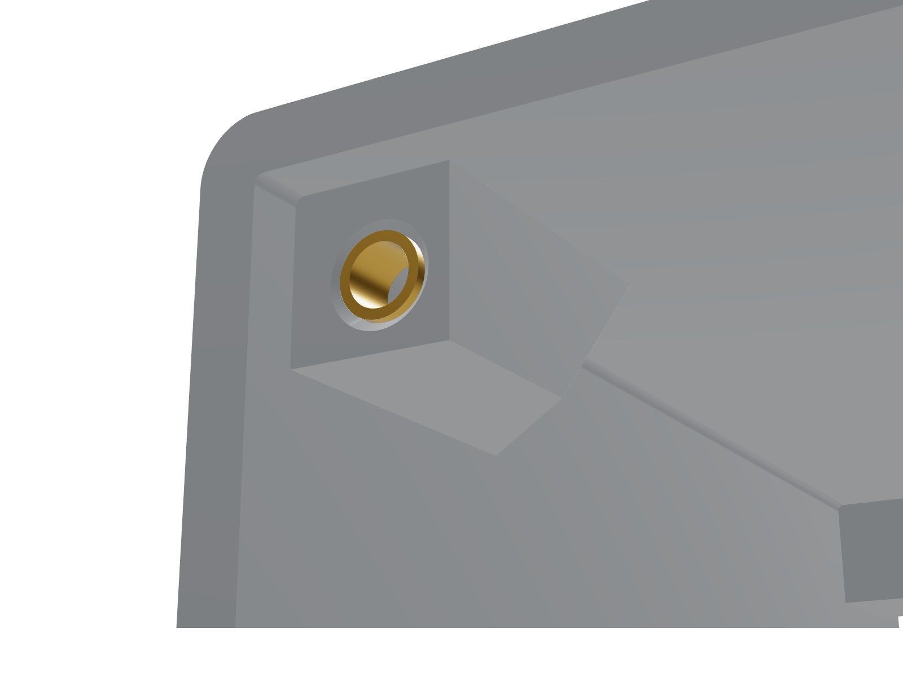
6 · Fastener and insert schedule
The entry point is where the screw enters the first part. The direction points into the material. Coordinates as in the contents page.
| Joint | Entry point X, Y, Z | Direction | Screw |
|---|---|---|---|
| front | -75.5, -45.5, 7.5 | 0, 1, 0 | M3 × 8 |
| rear | -75.5, 47, 7.5 | 0, -1, 0 | M3 × 6 |
| front | -75.5, -45.5, 100.5 | 0, 1, 0 | M3 × 8 |
| rear | -75.5, 47, 100.5 | 0, -1, 0 | M3 × 6 |
| front | 75.5, -45.5, 7.5 | 0, 1, 0 | M3 × 8 |
| rear | 75.5, 47, 7.5 | 0, -1, 0 | M3 × 6 |
| front | 75.5, -45.5, 100.5 | 0, 1, 0 | M3 × 8 |
| rear | 75.5, 47, 100.5 | 0, -1, 0 | M3 × 6 |
| tray | 1.3, -45.5, 13 | 0, 1, 0 | M3 × 8 |
| tray | 62.8, -45.5, 13 | 0, 1, 0 | M3 × 8 |
| speaker | -63.09, -37.9, 43.41 | 0, -1, 0 | M3 × 5 |
| speaker | -63.09, -37.9, 95.59 | 0, -1, 0 | M3 × 5 |
| speaker | -10.91, -37.9, 43.41 | 0, -1, 0 | M3 × 5 |
| speaker | -10.91, -37.9, 95.59 | 0, -1, 0 | M3 × 5 |
| speaker | 10.91, -37.9, 43.41 | 0, -1, 0 | M3 × 5 |
| speaker | 10.91, -37.9, 95.59 | 0, -1, 0 | M3 × 5 |
| speaker | 63.09, -37.9, 43.41 | 0, -1, 0 | M3 × 5 |
| speaker | 63.09, -37.9, 95.59 | 0, -1, 0 | M3 × 5 |
| board | 9.8, 19.77, 12.6 | 0, 0, -1 | Ø1.9 × 7 self-tapping |
| board | 54.3, 19.77, 12.6 | 0, 0, -1 | Ø1.9 × 7 self-tapping |
7 · Snap-fit covers
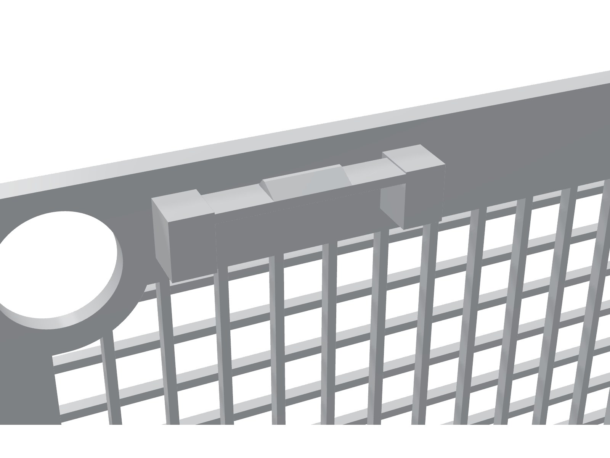
| Value (estimate, one catch) | |
|---|---|
| Beam: length × width × height | 10 × 0.5 × 2 mm |
| Deflection at the mouth | 0.25 mm |
| Bending strain (fixed–fixed beam, centre load) | 1.5 % |
| Spring force at full deflection | 3.5 N |
| Push-on force (18° lead-in, μ 0.3) | 2.4 N |
| Pull-off force (45° lip, μ 0.3) | 6.5 N |
| Grille: four catches, pull-off | 26 N |
| Cover | X | Z | Bump |
|---|---|---|---|
| grille | -63.75 | 36.5 | −Z |
| grille | -63.75 | 101.7 | +Z |
| grille | 63.75 | 36.5 | −Z |
| grille | 63.75 | 101.7 | +Z |
| strip | -60 | 24 | +Z |
| strip | -60 | 9 | −Z |
| strip | 62 | 26 | +Z |
| strip | 27 | 7 | −Z |
PLA strain at yield along the lines is about 3 to 4 %. The estimate uses E = 3.5 GPa. Confirm with the test coupons (section 4).
7 · Snap-fit covers
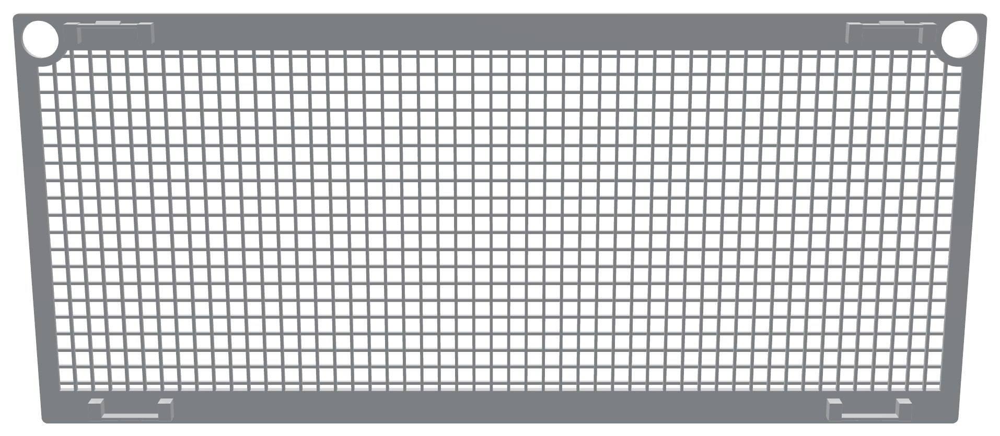
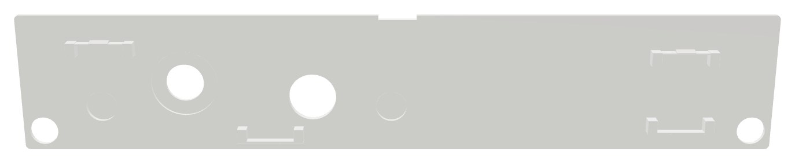
8 · Fits and clearances
| Fit | Value (mm) | Note |
|---|---|---|
| Panels in the sleeve opening | 0.3 per side | Baffle, grille, strip, rear panel |
| Sleeve front lead-in chamfer | 0.6 × 45° | Takes the elephant foot of the first layers |
| Front post face setback | 0.4 | Insert rings and support marks cannot push the baffle forward |
| Insert relief chamfer | 0.5 × 45° | Takes the plastic that the hot insert pushes up |
| Cap head in port and counterbore | 0.25 radial | Ø6.0 for a Ø5.5 head. Grille ports +0.075 comp. |
| Head top to cover face | 0 (flush) | Counterbore 1.5 + cover 1.5 = head 3.0 |
| Tray head pocket in the strip | 0.25 radial, 0.25 axial | Head stands 0.75 in front of the baffle, pocket 1.0 deep |
| Snap post in pocket | 0.15 per side | Locates the covers |
| Snap bump on the lip | 0.05 interference | Preload |
| Snap bump top to pocket wall | 0.1 | Groove clearance |
| Knob to strip | 0.8 | Axial gap |
| Strip to grille seam | 0.5 | Horizontal seam on the front |
| Clearance holes | Ø3.4 | M3 screws |
| Insert holes | Ø4.0 | Short M3 inserts |
All values are nominal model values. The Cura profiles compensate the calibrated shrink and expansion, so the printed parts follow the model.
9 · Post-processing
| Part | Operation | Tool | Depth | Note |
|---|---|---|---|---|
| Sleeve | 4 front post holes | Drill Ø4.0 | 7 mm | The Ø1.6 pilot guides the drill |
| Sleeve | Remove the supports | Pliers, scraper | — | Below the four front posts. Make the post faces flat. |
| Sleeve | 8 inserts | Soldering iron, M3 insert tip | Flush | 4 front, 4 rear |
| Baffle | 6 counterbore membranes | Drill Ø3.4 | Through | From the back. The printed hole guides the drill. |
| Baffle | Volume control membrane | Knife | — | Cut out to the Ø7.5 hole, from the back |
| Baffle | AUX membrane | Knife | — | Cut out to the Ø6.4 hole, from the back |
| Baffle | 8 inserts | Soldering iron | Flush | In the two spacer frames |
| Tray | 2 tab holes | Drill Ø4.0 | Through the tab | Then 2 inserts |
| Knob | Knob mark | Glue | — | White mark into the groove |
| Grille, strip | Check the catch beams | Eye, fine blade | — | The 0.5 gap below each beam must be open. Cut any strings. |
A hole that opens to the bed fills with support, and a horizontal hole sags. The model therefore prints small holes as Ø1.6 pilot holes with a 45° tip, and it closes each counterbore with a 0.25 mm membrane. The slicer prints each membrane as one straight bridge. Drill or cut each one after the print.
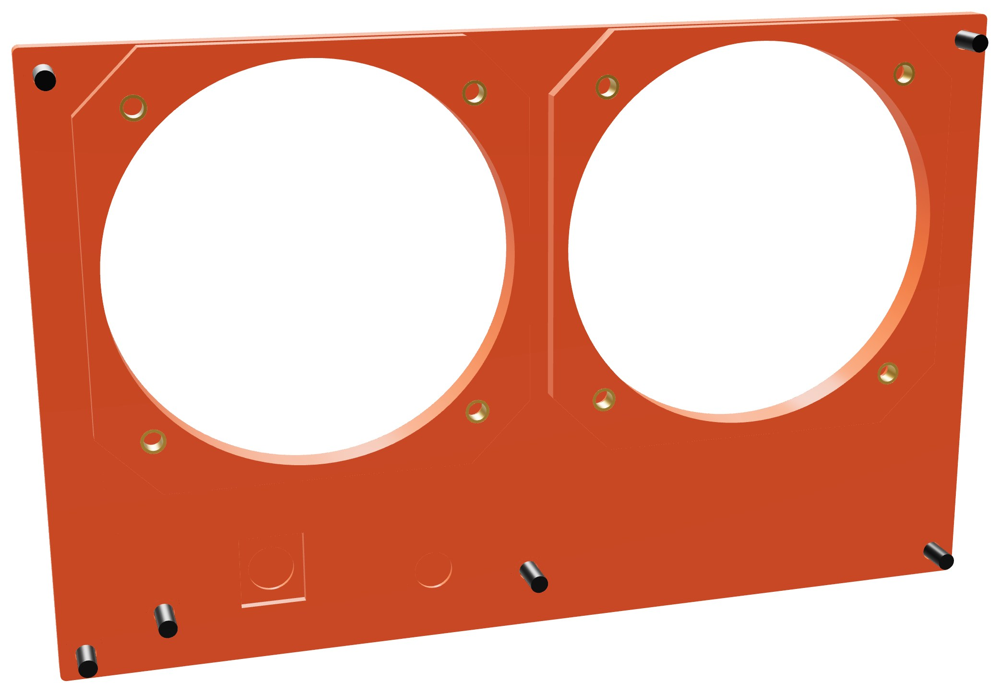
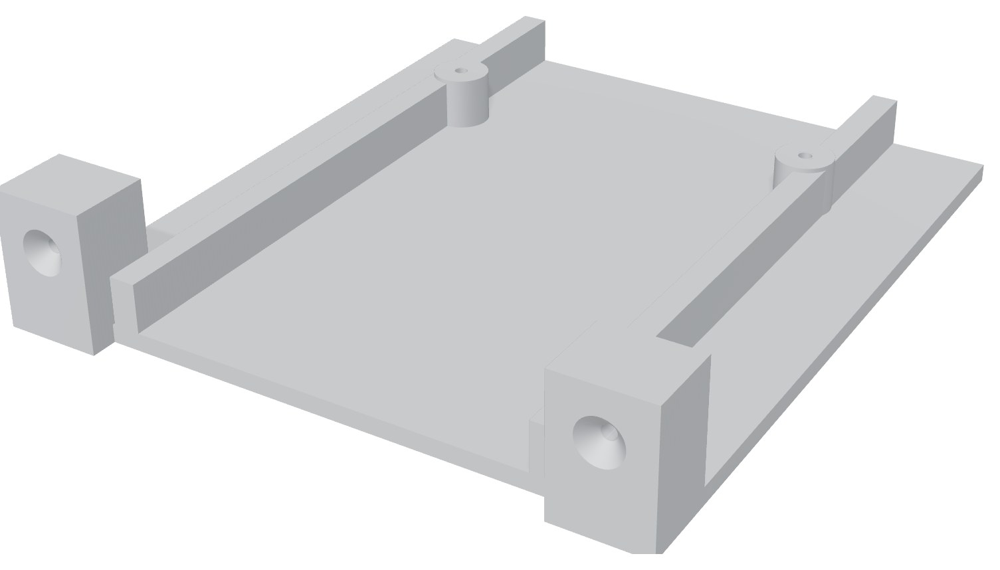
10 · Assembly
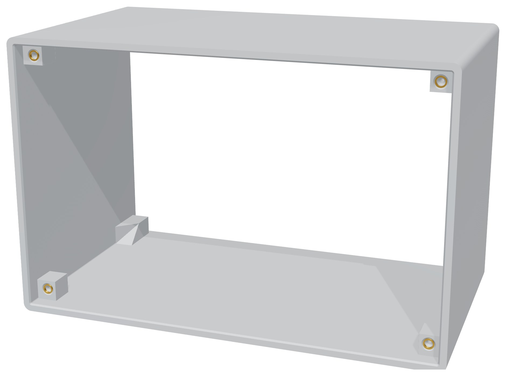
11 · Inspection and acceptance
| Check | Method | Accept |
|---|---|---|
| Sleeve outside size | Calliper | 166.0 × 108.0 × 94.0 ±0.3 |
| Sleeve front rim flat | Put the rim on a flat plate | No corner lifts more than 0.3 |
| Panel fit | Push each panel into the sleeve opening | Slides in by hand, no gap above 0.5 on a side |
| Grille rib layers | Cura layer view, then the part | Layers 1–3: one line for each horizontal rib. Layers 4–6: one line for each vertical rib. |
| Head flush | Straight edge across the port | Head top within ±0.2 of the cover face |
| Snap catches | Coupons, then the covers | Each catch clicks. The cover sits flat. Pull-off by hand with no crack. |
| Membranes | Eye | Each membrane is a closed flat bridge before you drill it |
| Inserts | Eye, then a screw | Flush with the face, square, the screw turns in by hand |
| Volume control | Assemble | The body sits on its pocket floor. The nut sits in its recess. The knob turns with 0.8 gap to the strip. |
| Air seal | Play an 80–300 Hz sweep | No rattle, no air noise at the seams |
| Function | Pair a phone, test AUX | Sound from both drivers, AUX works |
12 · Open items
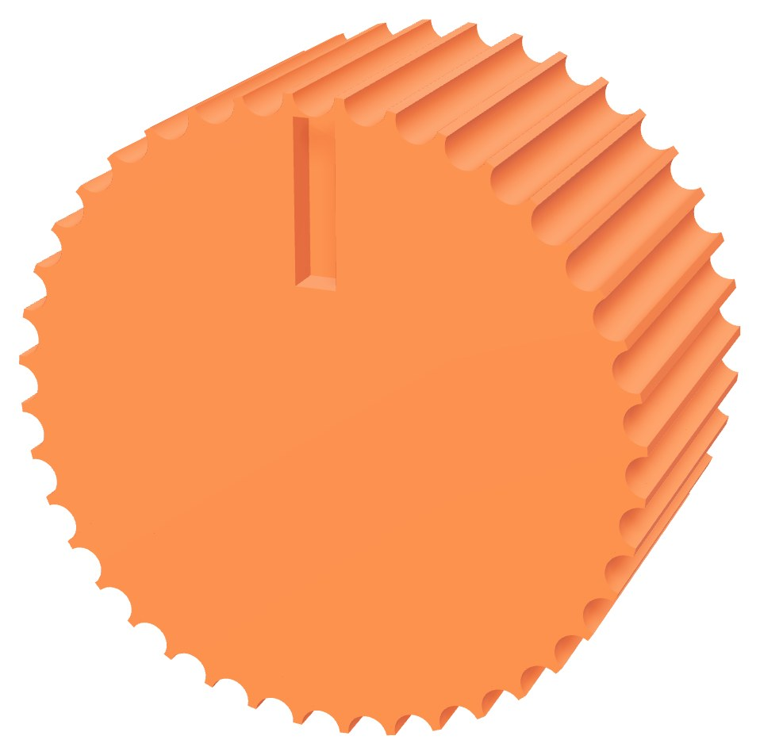